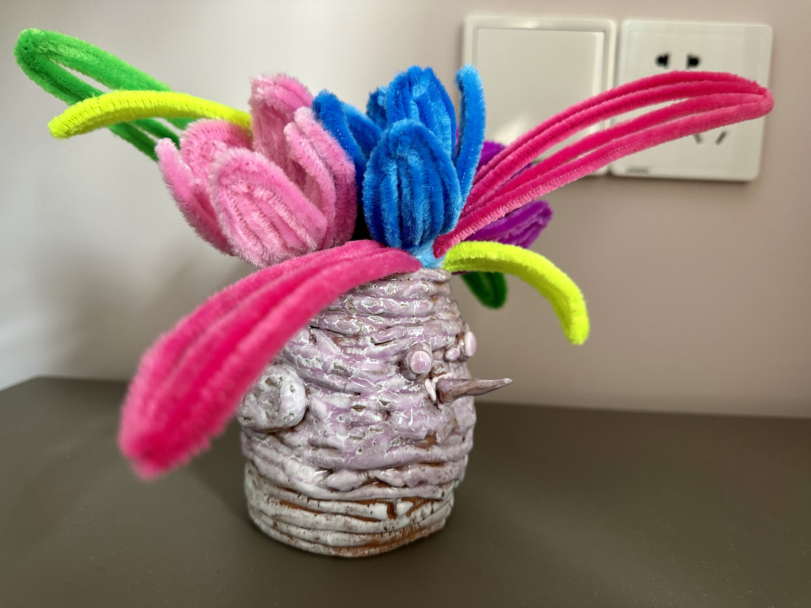

今天一家人在新家吃了一顿团员饭，作为我们拥有新家后的第一次正式庆祝。不过还并没有完全搬过来，小登还太小、小念还需要在现在的幼儿园上完大班，所以在之后的很长一段时间内还是只有我一个人在这边住😂

上午和路秘书一起送小念去上陶艺课，她和我一起来的原因是想给那个安排我们进来的老师送两盒月饼，她知道这个活我这种笨嘴笨舌的人肯定完不成，而且我一点都不擅长这些。一开始我也觉得她完不成，认为老师不会轻易收家长东西的。没想到在路秘书的再四推让下，那个老师最后还是接了我们的东西，还主动和我们说下学期可以再给我们推荐一些其他课程。我非常非常佩服路秘书这种有社交牛逼症的人。
距下课还有一个半小时，我和路秘书压了40分钟马路，走到了一个距离上课地点最近的一个瑞幸，中间经过铁路高架桥看到一列高铁经过，路秘书跟我讲了一个当年追她的男生后来进了铁路局工作的一段故事。我们到瑞幸后我点了一杯之前没喝过的咖啡，在那里歇了20分钟，之后一人骑了一个共享单车回到了上课地点。因为平时上下班路程上的需要，我开了哈罗和滴滴两个共享单车平台的月卡，所以今天我用每个平台扫了一个，骑车就没有花钱。
中午回家后路秘书亲自操刀给我剪了个头发，以后又可以在剪头发的开销上省下一笔钱了。过程中我爸作为有8年理发经验的人进行了友情指导。之后去稻香村买了些熟食，我还给自己买了三块在疫情居家办公期间发现的一个好吃的糕点——山楂锅盔，强烈爱吃山楂口味的小伙伴尝一尝。买完熟食回家收拾了一些东西就来新家了，吃饭过程中还喝了两盅酒，现在还晕乎乎的。
小念今天带回了她的第一件陶艺作品，一只啄木马笔筒，里边插了扭扭棒做的花：
